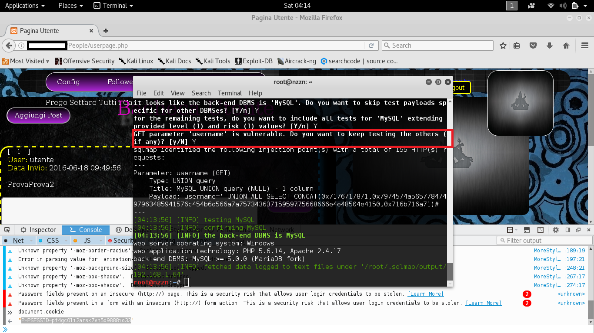
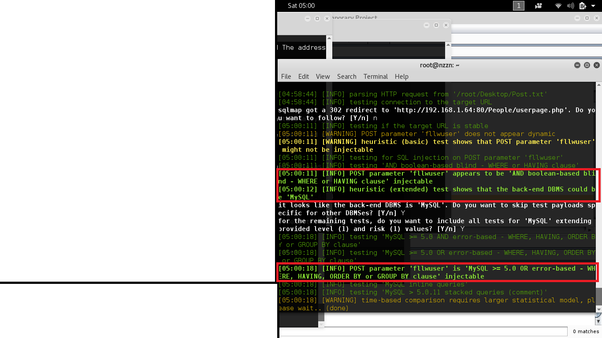
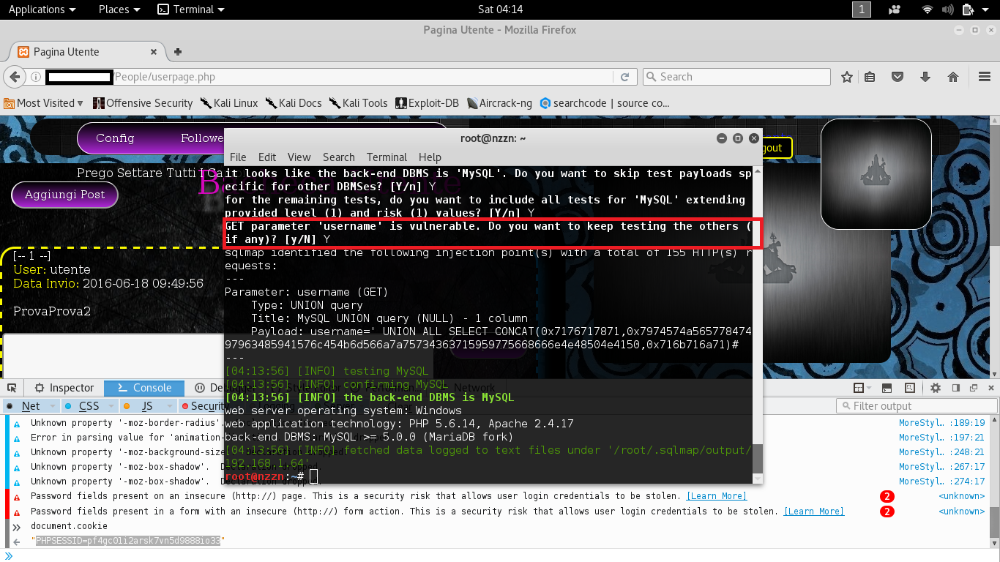
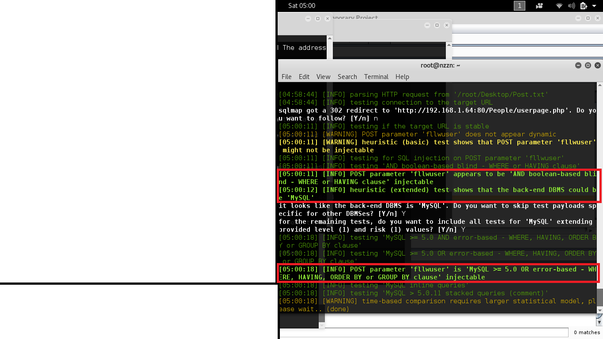
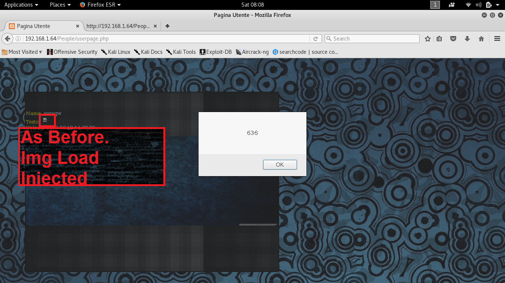
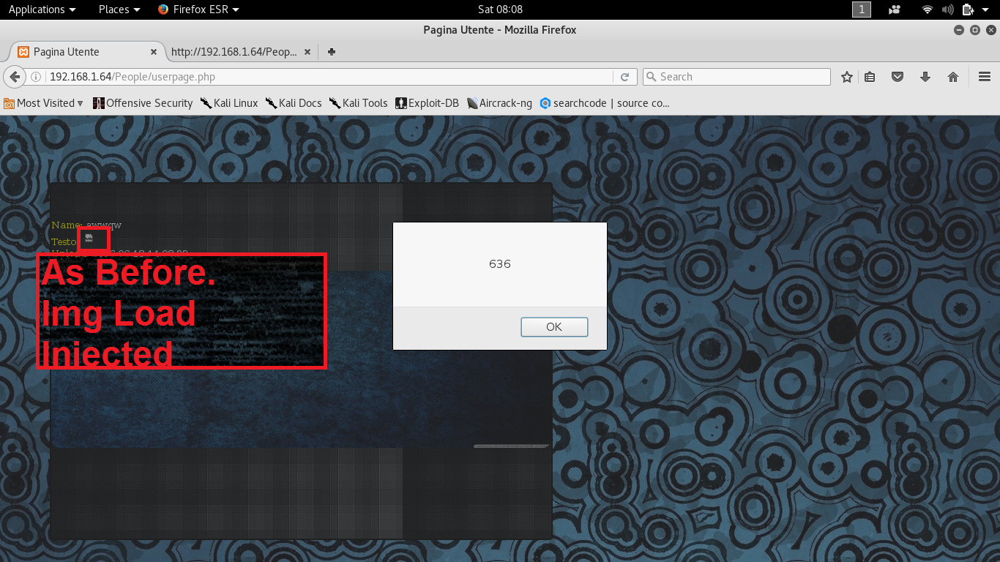

PeoPle Analysis
Si riporta in questa pagina l'analisi superficiale del web service e relative vulnerabilita` riscontrate sottolineando come non vi fosse alcun sistema di sicurezza preventivo nel momento dell'analisi se non le configurazioni di base di XAMPP, e rispettivo MySql.
Proxy: the sword you are using to protect you has the same attack power of the sword that somebody is using to attack you
Premessa:
Sebbene l'utilizzo di un proxy per monitorare i pacchetti che lo attraversano al fine di garantire la sicurezza della rete sia
uno dei metodi piu` efficaci per proteggersi da attacchi provenienti dall'esterno, risulta altrettanto vero che l'utilizzo di un proxy
agevola notevolmente operazioni di analisi a fine malevoli e la creazione di un vettore d'attacco valido.
Run: BurpSuite, purtroppo in edizione free, e` un tool molto pratico per effettuare il monitoraggio dei pacchetti, manipolazione delle richieste nonche` altre operazioni di testing e scanning.
Viene settato un proxy in ascolto attraverso il quale far passare tutto il traffico.
Viene impostato il browser per reindirizzare verso il proxy in ascolto tutte le richieste in entrata e in uscita, a questo punto se il proxy e` attivo sara` necessario, dal pannello di BurpSuite, far passare (forward) o bloccare (drop) le varie richieste e risposte.
Effettuando il log-in dal web service ora e` possibile analizzare tutto il traffico in transito attraverso il proxy.
BurpSuite mette a disposizione uno spider automatico per enumerare tutte le risorse presenti sullo specifico dominio nonche` alcune specifiche richieste. A differenza dello spidering manuale (usare il proxy e navigare clickando sulle varie risorse, link ecc), lo spidering automatico genera un "rumore" non indifferente nelle richieste ricevute dal server e nei log: fondamentale per il web admin saper riconoscere un operazione di spidering automatico nel caso non vi siano presenti dei software di difesa specifici. In poco tempo lo spider avra` enumerato tutti i possibili URL accedibili dall'host locale.
Altro software degno di nota e` OWASP ZAP che effettua anch'esso operazioni di spidering, analisi del traffico e delle vulnerabilita'."
Fornisce direttamente le vulnerabilita` riscontrate tramite un'analisi automatica e...
Fornendo un URL piu` accurato indicante un parametro forse iniettabile, effettua automaticamente un testing per verificare se e` possibile un qualunque tipo di SQL Injection. Si noti come OWASP non rilevera` alcuna vulnerabilita` SQL Injection poiche` l'analisi e` stata effettuata non utilizzando la sintassi per mySQL; solo alcune risposte risultano degne di nota per le tempistiche molto differenti rispetto alla norma, e` comunque sempre opportuno effettuare analisi con piu` tool automatici.
SQL Injection
Run: BurpSuite, purtroppo in edizione free, e` un tool molto pratico per effettuare il monitoraggio dei pacchetti, manipolazione delle richieste nonche` altre operazioni di testing e scanning.
Viene settato un proxy in ascolto attraverso il quale far passare tutto il traffico.
Viene impostato il browser per reindirizzare verso il proxy in ascolto tutte le richieste in entrata e in uscita, a questo punto se il proxy e` attivo sara` necessario, dal pannello di BurpSuite, far passare (forward) o bloccare (drop) le varie richieste e risposte.
Effettuando il log-in dal web service ora e` possibile analizzare tutto il traffico in transito attraverso il proxy.
BurpSuite mette a disposizione uno spider automatico per enumerare tutte le risorse presenti sullo specifico dominio nonche` alcune specifiche richieste. A differenza dello spidering manuale (usare il proxy e navigare clickando sulle varie risorse, link ecc), lo spidering automatico genera un "rumore" non indifferente nelle richieste ricevute dal server e nei log: fondamentale per il web admin saper riconoscere un operazione di spidering automatico nel caso non vi siano presenti dei software di difesa specifici. In poco tempo lo spider avra` enumerato tutti i possibili URL accedibili dall'host locale.
Altro software degno di nota e` OWASP ZAP che effettua anch'esso operazioni di spidering, analisi del traffico e delle vulnerabilita'."
Fornisce direttamente le vulnerabilita` riscontrate tramite un'analisi automatica e...
Fornendo un URL piu` accurato indicante un parametro forse iniettabile, effettua automaticamente un testing per verificare se e` possibile un qualunque tipo di SQL Injection. Si noti come OWASP non rilevera` alcuna vulnerabilita` SQL Injection poiche` l'analisi e` stata effettuata non utilizzando la sintassi per mySQL; solo alcune risposte risultano degne di nota per le tempistiche molto differenti rispetto alla norma, e` comunque sempre opportuno effettuare analisi con piu` tool automatici.
Run:
In seguito all'analisi preliminare si e` passato all'utilizzo di sqlmap per effettuare un testing accurato di possibile iniezione.
Poiche` tutte le pagine forse vulnerabili fanno utilizzo di reindirizzamento nel caso in cui non fosse settato un cookie si e` preferito specificare il cookie da utilizzare nelle richieste recuperandolo direttamente dal web service.
Viene testato il parametro "username" mediante GET requests all'URL "/People/otheruser.php?username=": i parametri GET di questo tipo sono normalmente i piu` vulnerabili inoltre lo specifico parametro, durante la scansione con OWASP, aveva dimostrato di non effettuare una sanificazione dell'input.
Nota: Un classico metodo di controllo manuale di una SQL Injection per mySQL chiude gli apici usando " 1'='1 ", l'operazione e` assolutamente da evitare poiche` regular expressions e software automatici sono appositamente settati per individuare questi "pattern classici"; e` sempre preferibile utilizzare una stringa randomizzata.

Abbiamo individuato un parametro vulnerabile a SQL Injection, possiamo quindi sfruttarlo per enumerare i databases, tabelle e colonne.
Ma soprattutto nasce la possibilita` di caricare una Web Shell, in questo caso scritta in PHP, ottenendo una shell da locale sull'host remoto. Purtroppo la shell ottenuta ha privilegi operativi limitati.

Si procede effettuando un controllo su altri parametri, questa volta in richieste di POST pertanto risulta necessario salvare la "raw request" da BurpSuite per poi utilizzarla con SQLMap. Risultano vulnerabili: "srchuser" di "search.php", "fllwuser" e "username di "userpage.php".
sqlmap mette a disposizione un'automatizzazione di shell scripting che permette non solo di ottenere una shell sull'host remoto, ma anche di caricare automaticamente un potente strumento quale il "Meterpreter" il re delle "DLL Injection". E` possibile notare come non sia risultato utilizzabile il parametro di GET "username"; perche` l'operazione andasse a buon fine e` risultato stato necessario utilizzare un parametro POST vulnerabile (difatti viene effettuato l'upload di un file!!).
Una volta ottenuta la shell Meterpreter, se si dispone degli script corretti, l'host remoto e` sotto il nostro totale controllo.
Meterpreter And BeeF
Poiche` tutte le pagine forse vulnerabili fanno utilizzo di reindirizzamento nel caso in cui non fosse settato un cookie si e` preferito specificare il cookie da utilizzare nelle richieste recuperandolo direttamente dal web service.
Viene testato il parametro "username" mediante GET requests all'URL "/People/otheruser.php?username=": i parametri GET di questo tipo sono normalmente i piu` vulnerabili inoltre lo specifico parametro, durante la scansione con OWASP, aveva dimostrato di non effettuare una sanificazione dell'input.
Nota: Un classico metodo di controllo manuale di una SQL Injection per mySQL chiude gli apici usando " 1'='1 ", l'operazione e` assolutamente da evitare poiche` regular expressions e software automatici sono appositamente settati per individuare questi "pattern classici"; e` sempre preferibile utilizzare una stringa randomizzata.

Abbiamo individuato un parametro vulnerabile a SQL Injection, possiamo quindi sfruttarlo per enumerare i databases, tabelle e colonne.
Ma soprattutto nasce la possibilita` di caricare una Web Shell, in questo caso scritta in PHP, ottenendo una shell da locale sull'host remoto. Purtroppo la shell ottenuta ha privilegi operativi limitati.

Si procede effettuando un controllo su altri parametri, questa volta in richieste di POST pertanto risulta necessario salvare la "raw request" da BurpSuite per poi utilizzarla con SQLMap. Risultano vulnerabili: "srchuser" di "search.php", "fllwuser" e "username di "userpage.php".
sqlmap mette a disposizione un'automatizzazione di shell scripting che permette non solo di ottenere una shell sull'host remoto, ma anche di caricare automaticamente un potente strumento quale il "Meterpreter" il re delle "DLL Injection". E` possibile notare come non sia risultato utilizzabile il parametro di GET "username"; perche` l'operazione andasse a buon fine e` risultato stato necessario utilizzare un parametro POST vulnerabile (difatti viene effettuato l'upload di un file!!).
Una volta ottenuta la shell Meterpreter, se si dispone degli script corretti, l'host remoto e` sotto il nostro totale controllo.
Si vedranno ora alcune funzionalita` basalari di questo tool, si tenga presente che ve ne sono molte altre se non (per gli scripter) infinite.
+ Vi e` la possibilita` di effettuare screen su desktop multipli. + Poiche` un processo "tmpsebazw.exe" con privilegi utente potrebbe risultare un po' strano nel caso in cui qualcuno guardi la process table vi e` la possibilita` di migrare ad un altro processo "scomparendo" totalmente dalla scena: da questo momento in poi il "meterpreter" non e` inviduabile se non esegue alcuna azione e, anche in quel caso, necessita di un'analisi approfondita (iniettato nelle DLL di un processo operante residente). + Keylogger incorporato + Possibilita` di avviare programmi, file eseguibili e script sul computer remoto
Ma ora il punto saliente: si scaricheranno tutti i file del web server e se ne modifichera` uno nello specifico.
Viene scaricata tutta la cartella contenente il "social network People".

Viene caricato il file "index.html"modificato: alla pagina iniziale del web service e` stato aggiunto un hook al "beef-xss-framework". Chiunque visiti la pagina da ora in avanti sara` "agganciato" e piu` o meno limitatamente "controllabile"-"exploitabile".
BeeF sfruttando un hook ad una specifica libreria JavaScript permette di catturare in pochi click i Cookie di sessione ed effettuare innumerevoli altre operazioni; la funzionalita` dell'hook e` garantita fino a quando l'utente resta nella pagina, ad ogni modo esistono metodologie che permettono di ottenere la persistenza anche in questo genere di attacco denominato MitB (Man In The Browser). BeeF permette di reindirizzare l'utente nonche` di mostrare finestre pop up sul browser della vittima.
BeeF e` un esempio estremizzato per complessita` ed efficacia di un attacco di tipo XSS: ad ogni modo l'hook al framework richiede sempre
e comunque di effettuare un attacco XSS.
Vengono sotto riportati gli XSS testati manualmente per questa specifica applicazione.

Attacchi XSS di tipo riflesso "scritti" in metodi diversi, non fuzzati ne` offuscati.
Viene testata manualmente la vulnerabilita` a SQL Injection.
Per iniettare un iframe che copra la pagina risulta necessario osservare il codice della pagina e "scalare" i vari tag html. In questo caso l'iniezione e` puramente di codice HTML.
My Simple Pythonic Backdoor °w°
Attacchi XSS di tipo riflesso "scritti" in metodi diversi, non fuzzati ne` offuscati.
Viene testata manualmente la vulnerabilita` a SQL Injection.
Per iniettare un iframe che copra la pagina risulta necessario osservare il codice della pagina e "scalare" i vari tag html. In questo caso l'iniezione e` puramente di codice HTML.
CSRF - Cross Site Request Forgery
Viene sfruttata la libreria Jquery per effettuare una richiesta .ajax di post (esiste il metodo apposito ".post", ma pesava controllare la sintassi) verso una pagina del sito. In questo modo si sfruttera` il log dell'utente per inviare una richiesta valida al server: nel primo caso si recuperano i cookie postandoli in risposta ad un post esistente, nel secondo si crea un nuovo post.
Possiamo anche inviare messaggi con script all'interno.

O possiamo caricare un'immagine finta che avvia lo script.
Too Fast, The End.
Viene sfruttata la libreria Jquery per effettuare una richiesta .ajax di post (esiste il metodo apposito ".post", ma pesava controllare la sintassi) verso una pagina del sito. In questo modo si sfruttera` il log dell'utente per inviare una richiesta valida al server: nel primo caso si recuperano i cookie postandoli in risposta ad un post esistente, nel secondo si crea un nuovo post.
Possiamo anche inviare messaggi con script all'interno.

O possiamo caricare un'immagine finta che avvia lo script.
PyThOn!
__
{0O}
\__/
/^/
( (
\_\_____
(_______)
(_________()Oo
Creazione File Di Configurazione Per Bot + Server
Avvio Del Server E Del Client Per Il Reverse SSH Tunneling
Connessione Instaurata Invio Comandi Server => Client e ricezione risposta
Funzionalita` Screenshot

Notare come l'immagine venga prima creata nella working directory del programma, inviata al server remoto e quindi eliminata
Funzionalita` di base di enumerazione del sistema remoto
Funzionalita` di base di invio di un file a un server remoto
Funzionalita` di base per avvelenamento della risoluzione DNS locale per OS linux.
Il client verra` sempre reindirizzato ogni qualvolta visitera` "google.com"